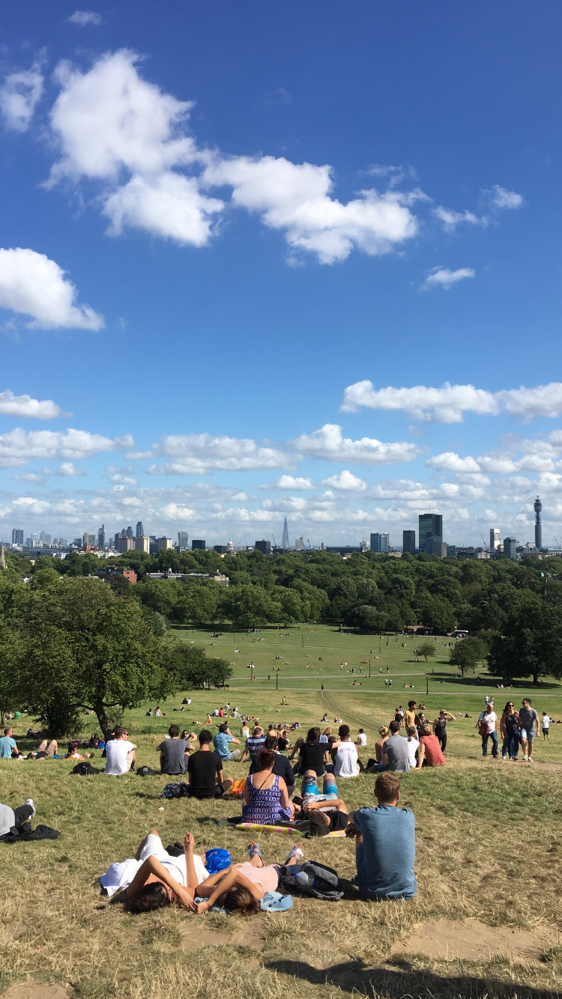
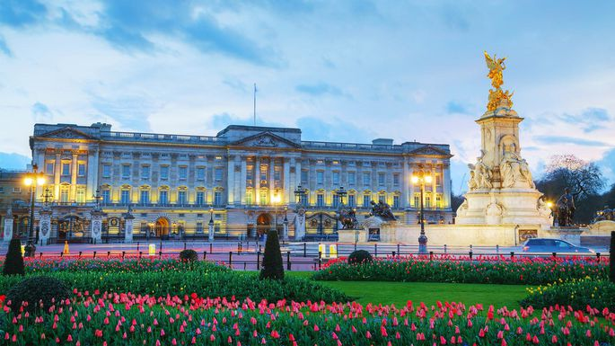
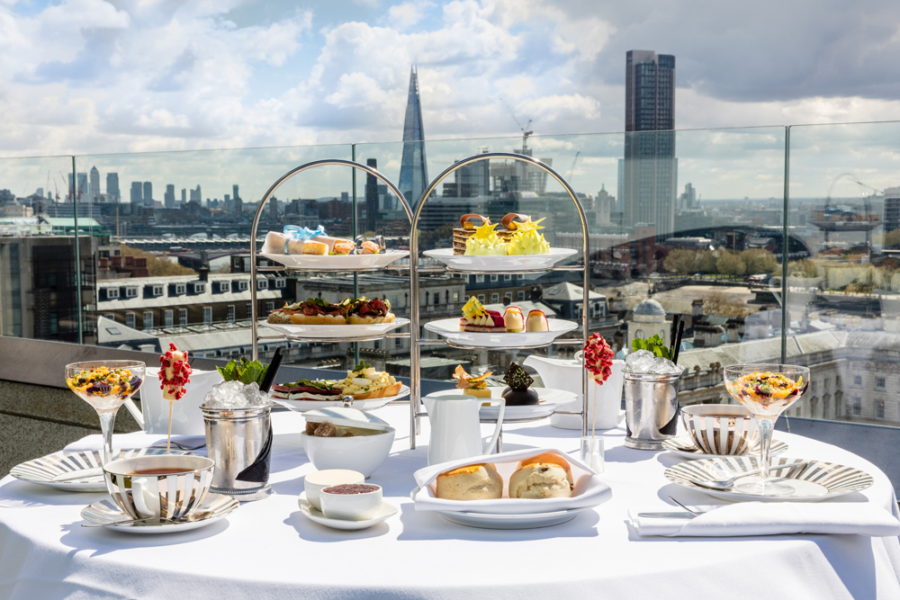

London is a city rich with history. For centuries, the British have conquored many lands and abruptly ended or modified several cultures, and those cultures have left an imprint on London as well, despite the country's best efforts. Here are some of the places you can visit in this old city.
In the warmer months, Primrose Hill is where Londoners of all ages go to ride bikes, rollerblade, and lie in the sun. You can get a good view of the skyline (on a sunny day), and it is a 15-minute walk from Buckingham Palace.
Buckingham Palace is where the royal family lives. But aside from that, it is a beauty to behold. There is always a large crowd of tourists in front from all around the world, and one can hear several different languages spoken. The palace guards are lovely in their uniforms. Whether or not you get a picture of the royals, it is one of the best experiences in London.
The London Eye is that famous ferris wheel that overlooks the entire city. It may cost you an eye and a tooth for a ride, but it is worth it to see the beautiful city. Big Ben, located down the street, emits a beautiful sound, so be sure to pass by it on the hour!
Afternoon tea is a huge part of British culture. It involves various cakes, biscuits, cookies, and, of course, tea. Make a reservation at any location for a wonderful experience.
Another place to experience a blend of cultures is the Queen's Gardens. It is open to the public and consists of a vast selection of various flowers. You can find an empty bench and people-watch for hours in good weather. Or, have a photo shoot with all of the vibrant colors around you!
« Paris Boston »